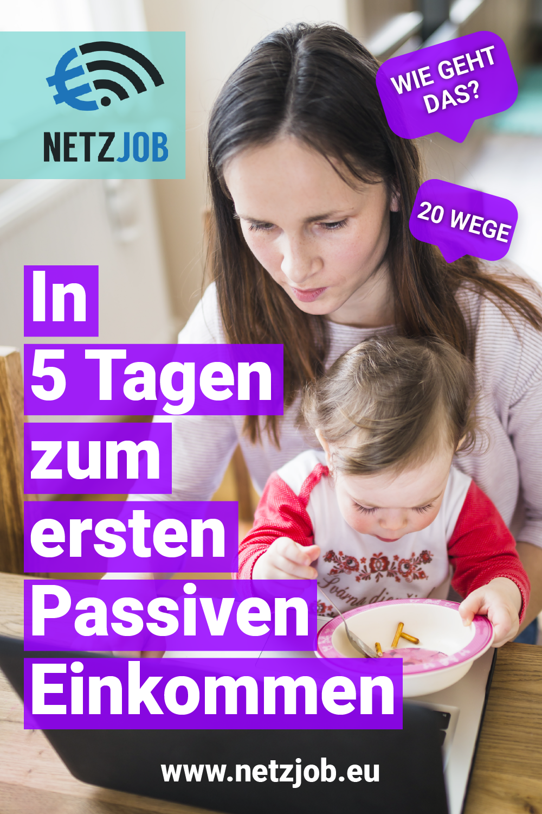

Welcome to Passives einkommen
Passives Einkommen | Nebenbei Geld verdienen | eBesucher.de
2020.11.28 10:37Informationen Mitgliederbereich Werbung kaufen Neuigkeiten Hilfe
Startseite Geld verdienen Besuchertausch Mailtausch Marketing Lexikon Neu anmelden Informationen Startseite Geld verdienen Besuchertausch Mailtausch Marketing Lexikon Neu anmelden Mitgliederbereich Einloggen Passwort vergessen Werbung kaufen Werbung buchen Preise Besucher kaufen Premium Werbung verwalten Neuigkeiten Alle Einträge Bedienung Besuchertausch Mailtausch Newsletter Restarter Server Team Anderes Hilfe Hilfe Kontakt per E-Mail Telefonsupport Häufig gestellte Fragen Forum Jugendschutz Werkzeuge Framebrecher-Test URL-Test Pagerank-Abfrage Werber-Abfrage SERP Snippet Generator Vorschau Klick-Anzeige Informationen Geld verdienen
Passives Einkommen
Was ist ein passives Einkommen?
Ein passives Einkommen impliziert, dass man regelmäßig Geld verdient , ohne etwas dafür tun zu müssen. Am Strand sitzen und Cocktails schlürfen, während die Einnahmen das Bankkonto fluten, die Aktien steigen und die Zinsen sich vervielfachen. Schön wär's! Leider versprechen viele Plattformen ein Leben in kompletter finanzieller Freiheit. So oder so ähnlich stimmt das aber natürlich nie! Das Internet ist nicht nur voll von solchen und ähnlichen Angeboten, es verschweigt auch meist, dass zu einem gewissen Grad eben doch aktiv etwas unternommen werden muss, um passiv Geld zu verdienen . Finanzielle Freiheit wird im Internet als Selbstverständlichkeit verkauft. Nichtsdestotrotz bietet die eBesucher Surfbar einzigartige Möglichkeiten, mit denen sich jeder einen passiven Nebenverdienst in Heimarbeit aufbauen kann.
Nebenbei Geld verdienen beim Surfen
Du erhälst auf eBesucher einen persönlichen Link. Durch Aufruf des Links werden Dir vollautomatisch vergütete Webseiten unserer Werbetreibenden präsentiert. Das Ganze funktioniert wie Werbung im Fernsehen : Die Webseiten in der Surfbar bauen sich automatisch (passiv) auf und verschwinden wieder von alleine. Für jede Webseite der Werbetreibenden erzielst Du einen passiven Verdienst : Du musst nichts dafür tun und schaust zu, wie sich deine Einnahmen aufbauen! Der passive Verdienst in der Surfbar wird deinem Profil direkt gutgeschrieben!
Passiv Geld verdienen beim Surfen Fragen zum Besuchertausch Wie kann ich passiv mehr Geld verdienen?Wie hoch ist mein passives Einkommen?
Wie viel Geld Du verdienst ist in erster Linie davon abhängig, wie aktiv Du bist. Verwendest Du die Surfbar nur sporadisch, wird Dein passives Einkommen gering ausfallen. Die Nutzung der Surfbar ist aber vollkommen umsonst und mit keinerlei Aufwand verbunden. Mit der Surfbar kannst Du rund um die Uhr und langfristig ein passives Einkommen aufbauen . Die Nutzung der Surfbar alleine ersetzt aber nur in wenigen Fällen einen geregelten Job oder feste Arbeit. Bevor Du jetzt also voreilig Deinem Vorgesetzten mit der Kündigung drohst, empfehlen wir Dir es einfach mal auszuprobieren. Kurzum: Es ist möglich eine passive Einnahmequelle aufzubauen. Wir investieren in den Erfolg unserer Nutzer und stehen Dir gerne telefonisch oder per E-Mail mit Rat und Tat zur Seite. Kontaktiere uns , wenn Du Fragen hast!
Passives Einkommen generieren und auszahlen
Der Verdienst des passiven Einkommens kann ab einem Gegenwert in Höhe von 2,00 Euro ausbezahlt werden. Eine Auszahlung kannst Du per PayPal oder SEPA beantragen. Auszahlungen werden mindestens alle sieben Tage durchgeführt. Du kannst beliebig viele Auszahlungen beantragen. Insgesamt wurden in den letzten Jahren bereits über 1 Millionen Euro ausgezahlt .
Muss ich Geld investieren um ein passives Einkommen zu bestreiten?
Nein! eBesucher ist dauerhaft kostenlos! Du musst keine Aktien handeln, keine Kugelschreiber zusammenbauen und musst auch rein gar nichts investieren. Alles was du benötigst ist ein Rechner mit einem Internetanschluss. Du kannst sofort anfangen Dir ein langfristiges passives Einkommen aufzubauen. Die Surfbar ist eine ideale und seriöse Gelegenheit , um passiv Geld zu verdienen. Immer noch skeptisch? Suche uns doch einfach auf Google!
Habe ich noch andere Möglichkeiten, mir ein passives Einkommen aufzubauen?
Neben der Surfbar bietet eBesucher weitere Verdiensmöglichkeiten. Optional kannst Du mit den Klicks oder dem Empfang von Info-E-Mails aktiv Webseiten besuchen. Auch hier werden Deine Interaktionen vergütet. Zwar nicht passiv, aber du wirst hierdurch noch mehr Einkommen generieren. Du kannst den Link zu Deiner Surfbar auch an Freunde weiterreichen und diese für Dich surfen lassen.
Eine weitere Möglichkeit besteht darin, dass Du Deine Einnahmen verwendest, um selber in der Surfbar zu werben. Bewerbe Deine Youtube Seiten und verdiene Geld mit Werbung oder bewerbe Affiliate Links und erhalte Provisionen. Die Möglichkeiten durch Werbung einen passiven Nebenverdienst zu erzielen sind endlos. Für Werbetreibende gibt es viele finanzielle Geschäftsideen, sei kreativ!
Geld verdienen mit Klicks Geld verdienen mit E-MailsErhalte ich Zinsen für mein generiertes Einkommen?
Zinsen? Nein, aber du kannst uns weiterempfehlen! Wir zahlen Dir ein lebenslanges passives Einkommen in Höhe von 8% auf das Einkommen eines von Dir geworbenen Freundes. Der Aufwand ist gering und wer langfristig wirbt, wird mehr passive Einnahmen erzielen. Im Mitgliederbereich unter Downline > Topliste siehst Du, wie viele Freunde andere Nutzer geworben haben. Viele Nutzer bestreiten einen großen Teil ihres passiven Einkommens durch Werbung.
Jetzt passiv Geld verdienen! Sven D. Passives Einkommen generieren ohne Geld zu investieren ist einfach! Das jedenfalls, denkt man sich bei einer Google Suche. Themen zu passivem Einkommen auf Google handeln von Aktien über langfristig vielversprechende Modelle wie Rendite Objekte oder Plattformen die auf den zweiten Blick weniger seriös erscheinen. Früher oder später blüht es einem: Ein passives Einkommen aufbauen ist nicht selbstverständlich. Die Rendite wächst nicht auf Bäumen und die meisten Anbieter sind in erster Linie an ihrem eigenen Einkommen interessiert. Wie lässt sich dennoch mit wenig Aufwand eine gute Summe passiv verdienen? eBesucher ist hier definitiv eine Option! Mit der Surfbar lässt sich ein stattliches Taschengeld generieren. Mails und Klick-Anzeigen nutze ich optional nebenbei. In der Summe ist das eine durchaus eine durch und durch lukrative Angelegenheit!Fabian R. Glaubst Du, Dir mit passivem Einkommen über eBesucher schnell und ohne jegliche Anstrengung finanzielle Freiheit zu verschaffen? Das wird eher schwierig! Ein passives Einkommen im Sinne eines Nebenverdienst ist eher realistisch. Im Vergleich zu anderen Plattformen ist eBesucher jedoch seriös und zuverlässig. Die Auszahlungen erfolgen prompt und seit vielen Jahren. Die Surfbar ist mit den Jahren viel stabiler geworden und mit den Klick-Anzeigen können jetzt noch mehr Punkte verdient werden.
Karsten F. Passives Einkommen verdienen mit der Surfbar funktioniert! Man verdient halt nicht hunderte Euro in der Woche aber wer aktiv surft und bestenfalls seine Freunde zum surfen bringt (Surflink auf Facebook teilen lohnt sich), kann wirklich sehr leicht schnelles Geld verdienen. Die Auszahlungen werden schnell ausgeführt und man wird hier nicht abgezockt. eBesucher ist einer der größten und (für mich) vertrauenswertesten Paid4 Anbieter im Internet.
Thomas R. Passives Einkommen verdienen mit der Surfbar ist kinderleicht. Einfach den persönlichen Link zur Surfbar aufrufen und automatisch Geld verdienen...und wenn die Surfbar mal unterbrochen wird, startet der Restarter diese erneut. Man verdient also 24h. eBesucher ist nicht nur in Deutschland der beste Auto-Surf Anbieter, man kann hier völlig kostenlos ein richtig gutes Taschengeld verdienen kann.
© 2002-2020
Mehr Besucher für Ihre WebseiteDeutsch English Русский Español Français
Unternehmen
Geld verdienenTraffic kaufen
Datenschutzerklärung
AGB für Nutzer
AGB für Werbetreibende
Impressum
Werbung buchen
Neue Besucher für WebseiteWebseitenbesucher kaufen
Online Werbung schalten
Kostenlos Werbung schalten
Deutschen Traffic kaufen
Support
Kontakt und HilfeFAQ für Nutzer
FAQ für Werbetreibende
Forum
Neuigkeiten
